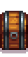

Chest
| Chest | |
 |
|
| A place to store your items. | |
| Information | |
| Source | Crafting |
| Sell Price | Cannot be sold |
| Crafting | |
| Recipe Source | Starter |
| Ingredients | |
The Chest is a craftable storage item that holds up to 36 different types of items. You can stack a maximum of 999 identical items into a single slot. Items do not decompose in chests.
Chests can be left in many different places in Stardew Valley. However, if a chest is left on a walking pathway for a villager, it will be pushed out of their way.
An empty chest can be picked up and returned to inventory by hitting it with any tool, or hitting repeatedly with an empty hand. Chests with any items inside cannot be picked up until emptied; however if a filled chest is hit with an Axe, Pickaxe, or Hoe, it will be pushed one tile away from the player. If that tile is not valid for item placement, the chest can jump to the nearest acceptable tile, such as behind the player, to a diagonally adjacent tile, or over other items to a valid one.
Coloring
When opened, chests have a color bar above their inventory window which allows players to select a different color for the chest. This can be changed at anytime without cost. There are 20 colors available to select in the color picker, plus the original brown color.
Color Picker
Individual chests
Trivia
Chests can be acquired without crafting by:
- Placing Furniture or crafted items in a spouse's room and then divorcing them. A chest will appear the day after the divorce, containing the items.
- Placing crafted items inside the submarine or the mermaid boat during the Night Market. A chest containing the items will appear on the beach when the Night Market ends. (Furniture will not yield a chest and will instead stay inside the structure and can be retrieved during the next Night Market.)
- Demolishing a Cabin in Multiplayer. A chest containing the farmhand's inventory will replace the cabin.
History
- 1.0: Introduced.
- 1.1: Added ability to change color, and chests are no longer able to be placed in the mines.
- 1.4: When an NPC walks over a chest, it will dump its contents out instead of destroying them. Added menu button "Add to existing stacks". Chests can now be stacked in a player's inventory and in other chests.
- 1.5: Chests can be moved by repeatedly hitting them with an empty hand. A duplication glitch involving chest organization was fixed.
- 1.6: Chests can be moved by hitting it with a tool instead. Chests are now pushed out from NPC paths instead of being destroyed.